2024 National 5 Mathematics - Paper 2 marking instructions
Source: Scottish Qualifications Authority (SQA) / Qualifications Scotland. This is a StemInteract HTML companion, not an official HTML edition. Selectable text is supplied alongside original page images. Use the images or original PDF for equations, powers, fractions, vector notation, tables and diagrams; text extraction cannot fully preserve mathematical layout.
Jump to a question
PDF page 1
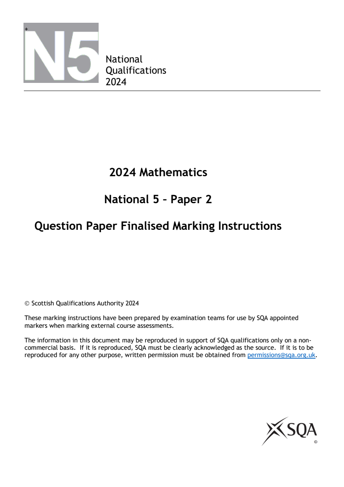
Selectable page text
+
National
Qualifications
2024
2024 Mathematics
National 5 – Paper 2
Question Paper Finalised Marking Instructions
© Scottish Qualifications Authority 2024
These marking instructions have been prepared by examination teams for use by SQA appointed
markers when marking external course assessments.
The information in this document may be reproduced in support of SQA qualifications only on a non-
commercial basis. If it is reproduced, SQA must be clearly acknowledged as the source. If it is to be
reproduced for any other purpose, written permission must be obtained from permissions@sqa.org.uk.PDF page 2
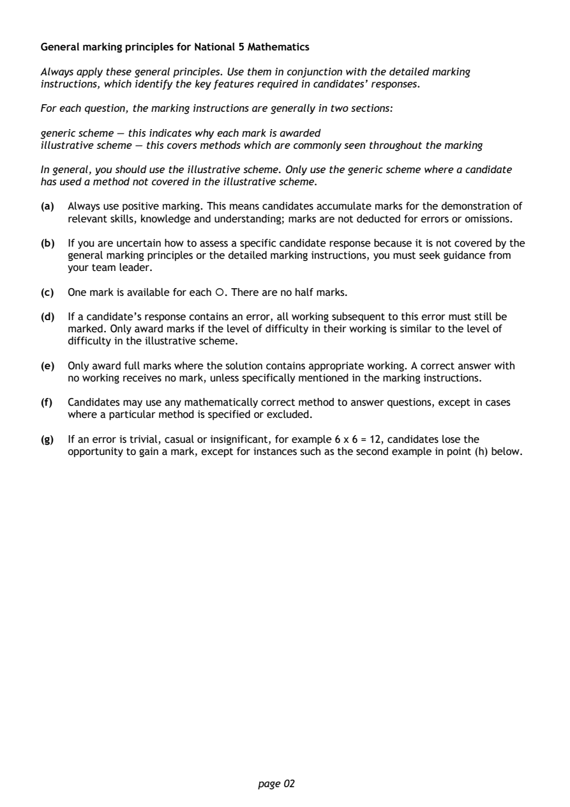
Selectable page text
General marking principles for National 5 Mathematics
Always apply these general principles. Use them in conjunction with the detailed marking
instructions, which identify the key features required in candidates’ responses.
For each question, the marking instructions are generally in two sections:
generic scheme — this indicates why each mark is awarded
illustrative scheme — this covers methods which are commonly seen throughout the marking
In general, you should use the illustrative scheme. Only use the generic scheme where a candidate
has used a method not covered in the illustrative scheme.
(a) Always use positive marking. This means candidates accumulate marks for the demonstration of
relevant skills, knowledge and understanding; marks are not deducted for errors or omissions.
(b) If you are uncertain how to assess a specific candidate response because it is not covered by the
general marking principles or the detailed marking instructions, you must seek guidance from
your team leader.
(c) One mark is available for each . There are no half marks.
(d) If a candidate’s response contains an error, all working subsequent to this error must still be
marked. Only award marks if the level of difficulty in their working is similar to the level of
difficulty in the illustrative scheme.
(e) Only award full marks where the solution contains appropriate working. A correct answer with
no working receives no mark, unless specifically mentioned in the marking instructions.
(f) Candidates may use any mathematically correct method to answer questions, except in cases
where a particular method is specified or excluded.
(g) If an error is trivial, casual or insignificant, for example 6 x 6 = 12, candidates lose the
opportunity to gain a mark, except for instances such as the second example in point (h) below.
page 02PDF page 3
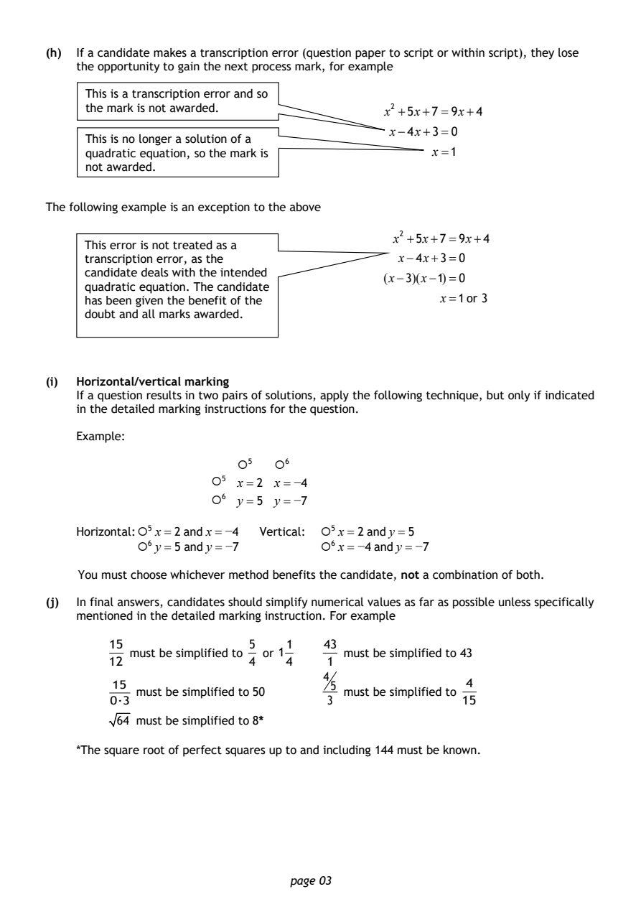
Selectable page text
(h) If a candidate makes a transcription error (question paper to script or within script), they lose
the opportunity to gain the next process mark, for example
This is a transcription error and so
the mark is not awarded. x² +5x+7 =9x+4
x−4x+3=0
This is no longer a solution of a
quadratic equation, so the mark is x=1
not awarded.
The following example is an exception to the above
x² +5x+7 =9x+4
This error is not treated as a
transcription error, as the x−4x+3=0
candidate deals with the intended
(x−3)(x−1)=0
quadratic equation. The candidate
has been given the benefit of the x=1 or 3
doubt and all marks awarded.
(i) Horizontal/vertical marking
If a question results in two pairs of solutions, apply the following technique, but only if indicated
in the detailed marking instructions for the question.
Example:
5 6
5 x = 2 x = −4
6 y = 5 y = −7
Horizontal: ⁵ x = 2 and x = −4 Vertical: 5 x = 2 and y = 5
6 y = 5 and y = −7 6 x = −4 and y = −7
You must choose whichever method benefits the candidate, not a combination of both.
(j) In final answers, candidates should simplify numerical values as far as possible unless specifically
mentioned in the detailed marking instruction. For example
15 5 1 43
must be simplified to or 1 must be simplified to 43
12 4 4 1
4
15 5 4
must be simplified to 50 must be simplified to
0·3 3 15
64 must be simplified to 8*
*The square root of perfect squares up to and including 144 must be known.
page 03PDF page 4
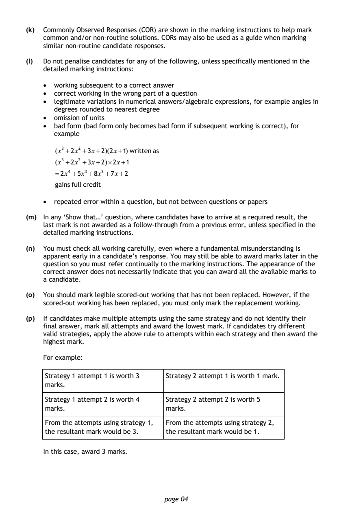
Selectable page text
(k) Commonly Observed Responses (COR) are shown in the marking instructions to help mark
common and/or non-routine solutions. CORs may also be used as a guide when marking
similar non-routine candidate responses.
(l) Do not penalise candidates for any of the following, unless specifically mentioned in the
detailed marking instructions:
• working subsequent to a correct answer
• correct working in the wrong part of a question
• legitimate variations in numerical answers/algebraic expressions, for example angles in
degrees rounded to nearest degree
• omission of units
• bad form (bad form only becomes bad form if subsequent working is correct), for
example
(x³ +2x² +3x+2)(2x+1) written as
(x³ +2x² +3x+2)×2x+1
=2x⁴ +5x³ +8x² +7x+2
gains full credit
• repeated error within a question, but not between questions or papers
(m) In any ‘Show that…’ question, where candidates have to arrive at a required result, the
last mark is not awarded as a follow-through from a previous error, unless specified in the
detailed marking instructions.
(n) You must check all working carefully, even where a fundamental misunderstanding is
apparent early in a candidate’s response. You may still be able to award marks later in the
question so you must refer continually to the marking instructions. The appearance of the
correct answer does not necessarily indicate that you can award all the available marks to
a candidate.
(o) You should mark legible scored-out working that has not been replaced. However, if the
scored-out working has been replaced, you must only mark the replacement working.
(p) If candidates make multiple attempts using the same strategy and do not identify their
final answer, mark all attempts and award the lowest mark. If candidates try different
valid strategies, apply the above rule to attempts within each strategy and then award the
highest mark.
For example:
Strategy 1 attempt 1 is worth 3 Strategy 2 attempt 1 is worth 1 mark.
marks.
Strategy 1 attempt 2 is worth 4 Strategy 2 attempt 2 is worth 5
marks. marks.
From the attempts using strategy 1, From the attempts using strategy 2,
the resultant mark would be 3. the resultant mark would be 1.
In this case, award 3 marks.
page 04PDF page 5
Paper 2, Question 1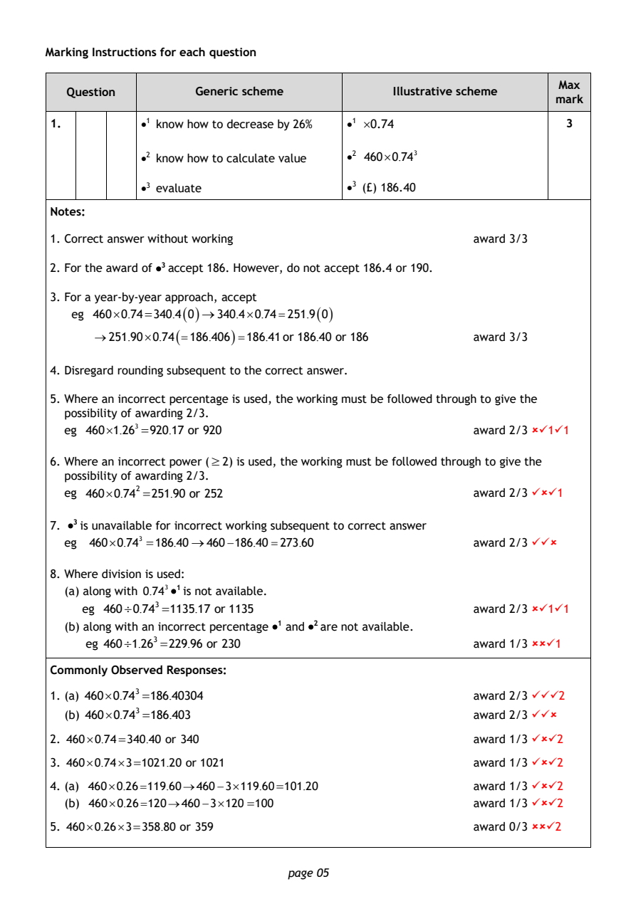
Selectable page text
Marking Instructions for each question
Max
Question Generic scheme Illustrative scheme
mark
1. •1 know how to decrease by 26% •1 ×0.74 3
•2 know how to calculate value •2 460×0.74³
•3 evaluate •3 (£) 186.40
Notes:
1. Correct answer without working award 3/3
2. For the award of •³ accept 186. However, do not accept 186.4 or 190.
3. For a year-by-year approach, accept
eg
460×0.74=340.4(0)→340.4×0.74=251.9(0)
→251.90×0.74(=186.406)=186.41or 186.40 or 186 award 3/3
4. Disregard rounding subsequent to the correct answer.
5. Where an incorrect percentage is used, the working must be followed through to give the
possibility of awarding 2/3.
eg 460×1.26³=920.17 or 920 award 2/3 ✓1✓1
6. Where an incorrect power (≥2) is used, the working must be followed through to give the
possibility of awarding 2/3.
eg 460×0.74²=251.90 or 252 award 2/3 ✓✓1
7. •³ is unavailable for incorrect working subsequent to correct answer
eg 460×0.74³ =186.40→460−186.40=273.60 award 2/3 ✓✓
8. Where division is used:
(a) along with 0.74³•¹ is not available.
eg 460÷0.74³=1135.17 or 1135 award 2/3 ✓1✓1
(b) along with an incorrect percentage •¹ and •² are not available.
eg 460÷1.26³=229.96 or 230 award 1/3 ✓1
Commonly Observed Responses:
1. (a) 460×0.74³=186.40304 award 2/3 ✓✓✓2
(b) 460×0.74³=186.403 award 2/3 ✓✓
2. 460×0.74=340.40 or 340 award 1/3 ✓✓2
3. 460×0.74×3=1021.20 or 1021 award 1/3 ✓✓2
4. (a) 460×0.26=119.60→460−3×119.60=101.20 award 1/3 ✓✓2
(b) 460×0.26=120→460−3×120=100 award 1/3 ✓✓2
5. 460×0.26×3=358.80 or 359 award 0/3 ✓2
page 05PDF page 6
Paper 2, Question 2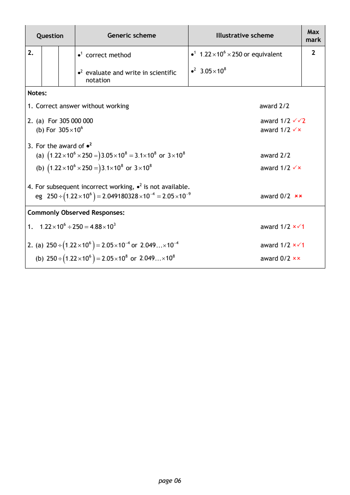
Selectable page text
Max
Question Generic scheme Illustrative scheme
mark
2. •1 correct method •1 1.22×10⁶×250or equivalent 2
•2 evaluate and write in scientific •2 3.05×10⁸
notation
Notes:
1. Correct answer without working award 2/2
2. (a) For 305 000 000 award 1/2 2
(b) For 305×10⁶ award 1/2
3. For the award of •²
( )
(a) 1.22×10⁶×250 = 3.05×10⁸ =3.1×10⁸ or 3×10⁸ award 2/2
( )
(b) 1.22×10⁶×250= 3.1×10⁸ or 3×10⁸ award 1/2
4. For subsequent incorrect working, •² is not available.
( )
eg 250÷ 1.22×10⁶ =2.049180328×10⁻⁴ =2.05×10⁻⁹ award 0/2
Commonly Observed Responses:
1. 1.22×10⁶ ÷250=4.88×10³ award 1/2 1
( )
2. (a) 250÷ 1.22×10⁶ =2.05×10⁻⁴or 2.049 ×10⁻⁴ award 1/2 1
( )
(b) 250÷ 1.22×10⁶ =2.05×10⁸ or 2.049 ×10⁸ award 0/2
page 06PDF page 7
Paper 2, Question 3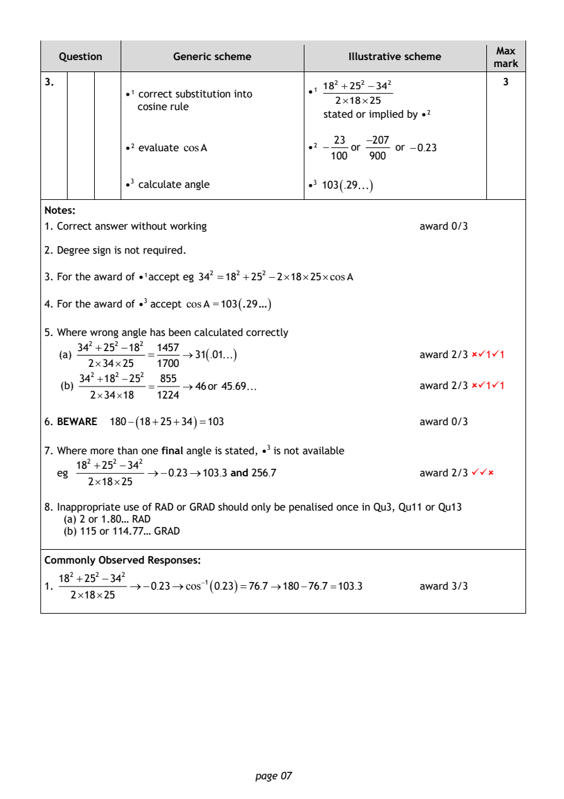
Selectable page text
Max
Question Generic scheme Illustrative scheme
mark
3. 3
18² +25² −34²
•¹
•¹ correct substitution into
2×18×25
cosine rule
stated or implied by •²
23 −207
•² evaluate cosA •² − or or −0.23
100 900
•3 calculate angle •3 103(.29 )
Notes:
1. Correct answer without working award 0/3
2. Degree sign is not required.
3. For the award of •¹accept eg 34² =18² +25² −2×18×25×cosA
4. For the award of •³ accept cosA =103(.29…)
5. Where wrong angle has been calculated correctly
34² +25² −18² 1457
(a) = →31(.01 ) award 2/3 ✓1✓1
2×34×25 1700
34² +18² −25² 855
(b) = →46or 45.69 award 2/3 ✓1✓1
2×34×18 1224
6. BEWARE
180−(18+25+34)=103
award 0/3
7. Where more than one final angle is stated, •³ is not available
18² +25² −34²
eg →−0.23→103.3 and 256.7 award 2/3 ✓✓
2×18×25
8. Inappropriate use of RAD or GRAD should only be penalised once in Qu3, Qu11 or Qu13
(a) 2 or 1.80… RAD
(b) 115 or 114.77… GRAD
Commonly Observed Responses:
18² +25² −34²
1. →−0.23→cos⁻¹(0.23)=76.7→180−76.7 =103.3 award 3/3
2×18×25
page 07PDF page 8
Paper 2, Question 4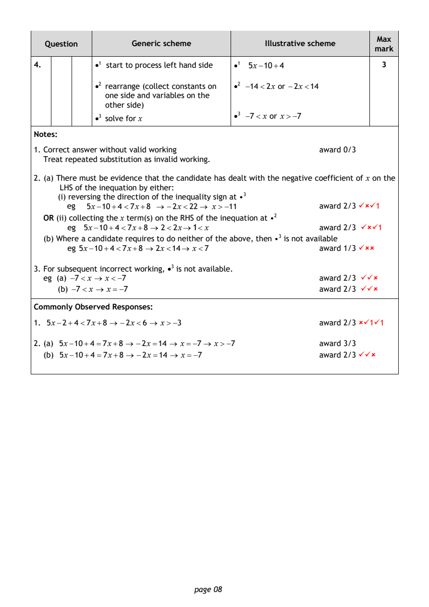
Selectable page text
Max
Question Generic scheme Illustrative scheme
mark
4. •1 start to process left hand side •1 5x−10+4 3
•2 rearrange (collect constants on •2 −14<2x or −2x<14
one side and variables on the
other side)
•3 solve for x •3 −7< x or x>−7
Notes:
1. Correct answer without valid working award 0/3
Treat repeated substitution as invalid working.
2. (a) There must be evidence that the candidate has dealt with the negative coefficient of x on the
LHS of the inequation by either:
(i) reversing the direction of the inequality sign at •³
eg 5x−10+4<7x+8 → −2x<22→ x>−11 award 2/3 ✓✓1
OR (ii) collecting the x term(s) on the RHS of the inequation at •²
eg 5x−10+4<7x+8 → 2<2x→1< x award 2/3 ✓✓1
(b) Where a candidate requires to do neither of the above, then •³ is not available
eg 5x−10+4<7x+8 → 2x<14→ x<7 award 1/3 ✓
3. For subsequent incorrect working, •³ is not available.
eg (a) −7< x → x<−7 award 2/3 ✓✓
(b) −7< x → x=−7 award 2/3 ✓✓
Commonly Observed Responses:
1. 5x−2+4<7x+8 → −2x<6 → x>−3 award 2/3 ✓1✓1
2. (a) 5x−10+4 =7x+8 → −2x=14 → x=−7→ x>−7 award 3/3
(b) 5x−10+4 =7x+8 → −2x=14 → x=−7 award 2/3 ✓✓
page 08PDF page 9
Paper 2, Question 5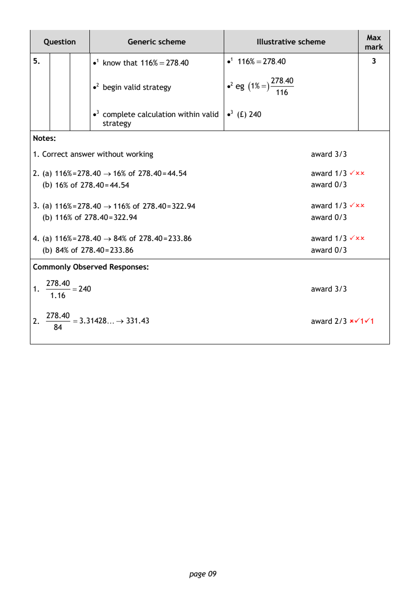
Selectable page text
Max
Question Generic scheme Illustrative scheme
mark
5. •1 know that 116%=278.40 •1 116%=278.40 3
278.40
•2 begin valid strategy •2 eg (1%=)
116
•3 complete calculation within valid •³ (£) 240
strategy
Notes:
1. Correct answer without working award 3/3
2. (a) 116%=278.40 →16% of 278.40=44.54 award 1/3
(b) 16% of 278.40=44.54 award 0/3
3. (a) 116%=278.40 →116% of 278.40=322.94 award 1/3
(b) 116% of 278.40=322.94 award 0/3
4. (a) 116%=278.40 → 84% of 278.40=233.86 award 1/3
(b) 84% of 278.40=233.86 award 0/3
Commonly Observed Responses:
278.40
1. =240 award 3/3
1.16
278.40
2. =3.31428 → 331.43 award 2/3 ✓1✓1
84
page 09PDF page 10
Paper 2, Question 6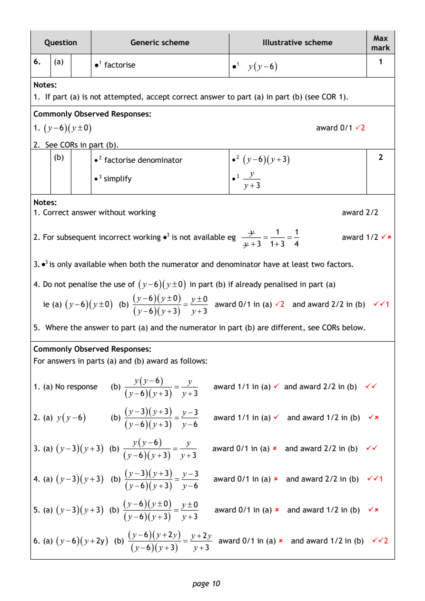
Selectable page text
Max
Question Generic scheme Illustrative scheme
mark
6. (a) ●1 factorise ●1 y(y−6) 1
Notes:
1. If part (a) is not attempted, accept correct answer to part (a) in part (b) (see COR 1).
Commonly Observed Responses:
1.
(y−6)(y±0)
award 0/1 2
2. See CORs in part (b).
(b) • 2 factorise denominator • 2 (y−6)(y+3) 2
y
• 3 simplify • 3
y+3
Notes:
1. Correct answer without working award 2/2
y 1 1
2. For subsequent incorrect working •³ is not available eg = = award 1/2 ✓
y +3 1+3 4
3. •³ is only available when both the numerator and denominator have at least two factors.
4. Do not penalise the use of
(y−6)(y±0)
in part (b) if already penalised in part (a)
(y−6)(y±0)
y±0
ie (a) (y−6)(y±0) (b) = award 0/1 in (a) 2 and award 2/2 in (b) ✓✓1
(y−6)(y+3) y+3
5. Where the answer to part (a) and the numerator in part (b) are different, see CORs below.
Commonly Observed Responses:
For answers in parts (a) and (b) award as follows:
y(y−6)
y
1. (a) No response (b) = award 1/1 in (a) ✓ and award 2/2 in (b) ✓✓
(y−6)(y+3) y+3
(y−3)(y+3)
y−3
2. (a) y(y−6) (b) = award 1/1 in (a) ✓ and award 1/2 in (b) ✓
(y−6)(y+3) y−6
y(y−6)
y
3. (a) (y−3)(y+3) (b) = award 0/1 in (a) and award 2/2 in (b) ✓✓
(y−6)(y+3) y+3
(y−3)(y+3)
y−3
4. (a) (y−3)(y+3) (b) = award 0/1 in (a) and award 2/2 in (b) ✓✓1
(y−6)(y+3) y−6
(y−6)(y±0)
y±0
5. (a) (y−3)(y+3) (b) = award 0/1 in (a) and award 1/2 in (b) ✓
(y−6)(y+3) y+3
(y−6)(y+2y)
y+2y
6. (a) (y−6)(y+2y) (b) = award 0/1 in (a) and award 1/2 in (b) ✓✓2
(y−6)(y+3) y+3
page 10PDF page 11
Paper 2, Question 7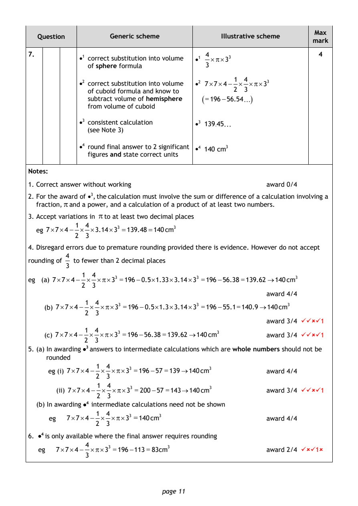
Selectable page text
Max
Question Generic scheme Illustrative scheme
mark
7. 4 4
•1 correct substitution into volume •1 ×π×3³
of sphere formula 3
1 4
•2 correct substitution into volume •2 7×7×4− × ×π×3³
of cuboid formula and know to 2 3
subtract volume of hemisphere (=196−56.54 )
from volume of cuboid
•3 consistent calculation •3 139.45
(see Note 3)
•4 round final answer to 2 significant ⁴
• 140 cm³
figures and state correct units
Notes:
1. Correct answer without working award 0/4
2. For the award of •³, the calculation must involve the sum or difference of a calculation involving a
fraction,πand a power, and a calculation of a product of at least two numbers.
3. Accept variations in πto at least two decimal places
1 4
eg 7×7×4− × ×3.14×3³ =139.48=140cm³
2 3
4. Disregard errors due to premature rounding provided there is evidence. However do not accept
4
rounding of to fewer than 2 decimal places
3
1 4
eg (a) 7×7×4− × ×π×3³ =196−0.5×1.33×3.14×3³ =196−56.38=139.62→140cm³
2 3
award 4/4
1 4
(b) 7×7×4− × ×π×3³ =196−0.5×1.3×3.14×3³ =196−55.1=140.9→140cm³
2 3
award 3/4 ✓✓✓1
1 4
(c) 7×7×4− × ×π×3³ =196−56.38=139.62→140cm³ award 3/4 ✓✓✓1
2 3
5. (a) In awarding •³ answers to intermediate calculations which are whole numbers should not be
rounded
1 4
eg (i) 7×7×4− × ×π×3³ =196−57 =139→140cm³ award 4/4
2 3
1 4
(ii) 7×7×4− × ×π×3³ =200−57 =143→140cm³ award 3/4 ✓✓✓1
2 3
(b) In awarding •⁴ intermediate calculations need not be shown
1 4
eg 7×7×4− × ×π×3³ =140cm³ award 4/4
2 3
6. •⁴ is only available where the final answer requires rounding
4
eg 7×7×4− ×π×3³ =196−113=83cm³ award 2/4 ✓✓1
3
page 11PDF page 12
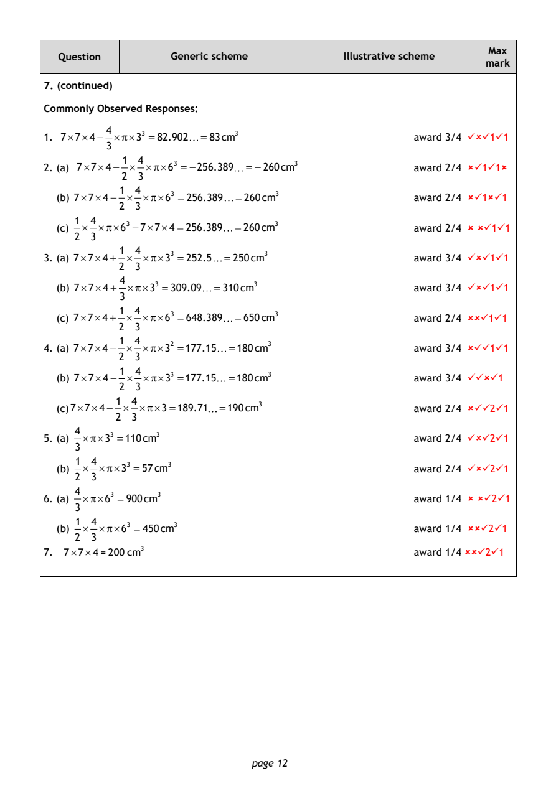
Selectable page text
Max
Question Generic scheme Illustrative scheme
mark
7. (continued)
Commonly Observed Responses:
4
1. 7×7×4− ×π×3³ =82.902 =83cm³ award 3/4 ✓✓1✓1
3
1 4
2. (a) 7×7×4− × ×π×6³ =−256.389 =− 260cm³ award 2/4 ✓1✓1
2 3
1 4
(b) 7×7×4− × ×π×6³ =256.389 =260cm³ award 2/4 ✓1✓1
2 3
1 4
(c) × ×π×6³ −7×7×4=256.389 =260cm³ award 2/4 ✓1✓1
2 3
1 4
3. (a) 7×7×4+ × ×π×3³ =252.5 =250cm³ award 3/4 ✓✓1✓1
2 3
4
(b) 7×7×4+ ×π×3³ =309.09 =310cm³ award 3/4 ✓✓1✓1
3
1 4
(c) 7×7×4+ × ×π×6³ =648.389 =650cm³ award 2/4 ✓1✓1
2 3
1 4
4. (a) 7×7×4− × ×π×3² =177.15 =180cm³ award 3/4 ✓✓1✓1
2 3
1 4
(b) 7×7×4− × ×π×3³ =177.15 =180cm³ award 3/4 ✓✓✓1
2 3
1 4
(c)7×7×4− × ×π×3=189.71 =190cm³ award 2/4 ✓✓2✓1
2 3
4
5. (a) ×π×3³ =110cm³ award 2/4 ✓✓2✓1
3
1 4
(b) × ×π×3³ =57cm³ award 2/4 ✓✓2✓1
2 3
4
6. (a) ×π×6³ =900cm³ award 1/4 ✓2✓1
3
1 4
(b) × ×π×6³ =450cm³ award 1/4 ✓2✓1
2 3
7. 7×7×4=200 cm³ award 1/4 ✓2✓1
page 12PDF page 13
Paper 2, Question 8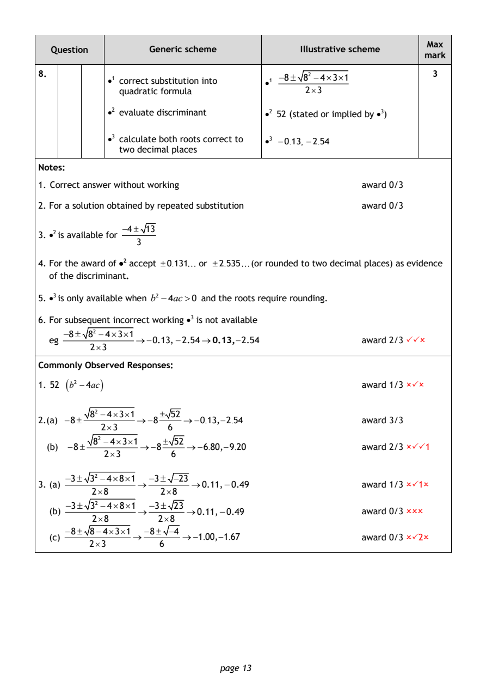
Selectable page text
Max
Question Generic scheme Illustrative scheme
mark
8. 3
•1 correct substitution into •1 −8± 8² −4×3×1
quadratic formula 2×3
•2 evaluate discriminant •2 52 (stated or implied by •³)
•3 calculate both roots correct to •3 −0.13, −2.54
two decimal places
Notes:
1. Correct answer without working award 0/3
2. For a solution obtained by repeated substitution award 0/3
−4± 13
3. •² is available for
3
4. For the award of •² accept ±0.131 or ±2.535 (or rounded to two decimal places) as evidence
of the discriminant.
5. •³ is only available when b² −4ac>0 and the roots require rounding.
6. For subsequent incorrect working •³ is not available
−8± 8² −4×3×1
eg →−0.13,−2.54→0.13,−2.54 award 2/3
2×3
Commonly Observed Responses:
( )
1. 52 b² −4ac award 1/3
8² −4×3×1 ± 52
2.(a) −8± →−8 →−0.13,−2.54 award 3/3
2×3 6
8² −4×3×1 ± 52
(b) −8± →−8 →−6.80,−9.20 award 2/3 1
2×3 6
−3± 3² −4×8×1 −3± −23
3. (a) → →0.11, −0.49 award 1/3 1
2×8 2×8
−3± 3² −4×8×1 −3± 23
(b) → →0.11, −0.49 award 0/3
2×8 2×8
−8± 8−4×3×1 −8± −4
(c) → →−1.00,−1.67 award 0/3 2
2×3 6
page 13PDF page 14
Paper 2, Question 9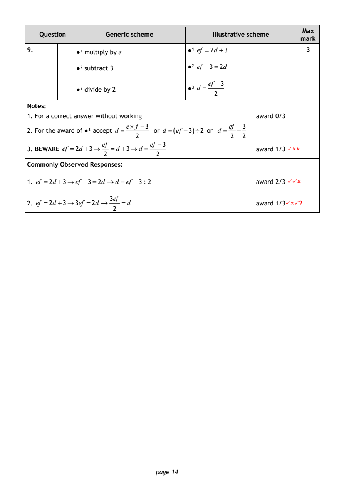
Selectable page text
Max
Question Generic scheme Illustrative scheme
mark
9. ●¹ multiply by e ●¹ ef =2d +3 3
●² subtract 3 ●² ef −3=2d
ef −3
●³ divide by 2 ●³ d =
2
Notes:
1. For a correct answer without working award 0/3
e× f −3 ef 3
2. For the award of ●³ accept d = or d =(ef −3)÷2 or d = −
2 2 2
ef ef −3
3. BEWARE ef =2d +3→ =d +3→d = award 1/3
2 2
Commonly Observed Responses:
1. ef =2d +3→ef −3=2d →d =ef −3÷2 award 2/3
3ef
2. ef =2d +3→3ef =2d → =d award 1/32
2
page 14PDF page 15
Paper 2, Question 10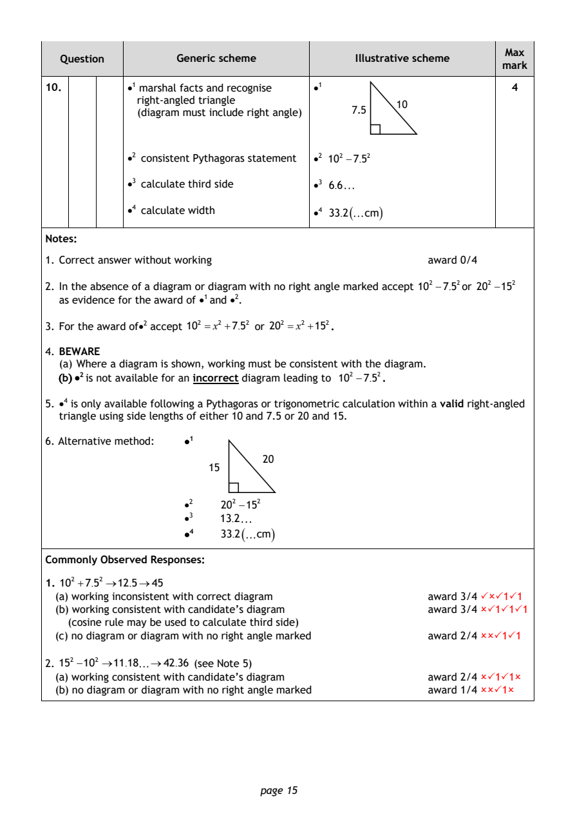
Selectable page text
Max
Question Generic scheme Illustrative scheme
mark
10. •1 marshal facts and recognise •1 4
right-angled triangle
(diagram must include right angle)
•2 consistent Pythagoras statement •2 10² −7.5²
•3 calculate third side •3 6.6
•4 calculate width •4 33.2( cm)
Notes:
1. Correct answer without working award 0/4
2. In the absence of a diagram or diagram with no right angle marked accept 10² −7.5²or 20² −15²
as evidence for the award of •¹ and •².
3. For the award of•² accept 10² =x² +7.5² or 20² =x² +15².
4. BEWARE
(a) Where a diagram is shown, working must be consistent with the diagram.
(b) •² is not available for an incorrect diagram leading to 10² −7.5².
5. •⁴ is only available following a Pythagoras or trigonometric calculation within a valid right-angled
triangle using side lengths of either 10 and 7.5 or 20 and 15.
6. Alternative method: •1
20
15
•2 20² −15²
•3 13.2
•4 33.2( cm)
Commonly Observed Responses:
1. 10² +7.5² →12.5→45
(a) working inconsistent with correct diagram award 3/4 11
(b) working consistent with candidate’s diagram award 3/4 111
(cosine rule may be used to calculate third side)
(c) no diagram or diagram with no right angle marked award 2/4 11
2. 15² −10² →11.18 →42.36 (see Note 5)
(a) working consistent with candidate’s diagram award 2/4 11
(b) no diagram or diagram with no right angle marked award 1/4 1
page 15PDF page 16
Paper 2, Question 11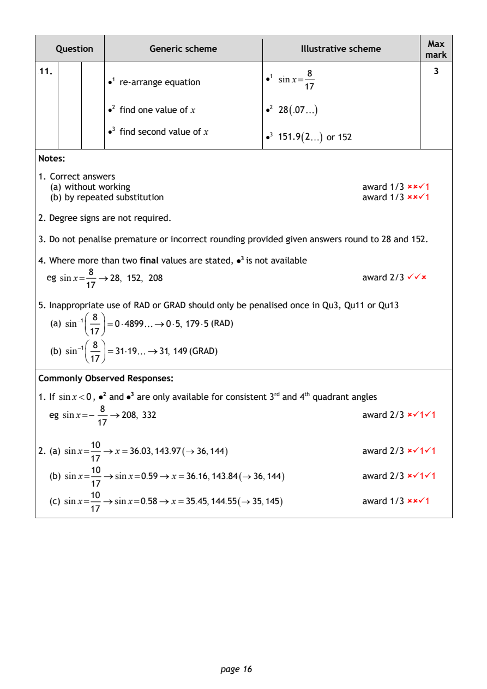
Selectable page text
Max
Question Generic scheme Illustrative scheme
mark
11. 8 3
2 •1 re-arrange equation •1 sinx=
17
•2 find one value of x •2 28(.07 )
•3 find second value of x
•3 151.9(2 ) or 152
Notes:
1. Correct answers
(a) without working award 1/3 ✓1
(b) by repeated substitution award 1/3 ✓1
2. Degree signs are not required.
3. Do not penalise premature or incorrect rounding provided given answers round to 28 and 152.
4. Where more than two final values are stated, •³ is not available
8
eg sinx= →28, 152, 208 award 2/3 ✓✓
17
5. Inappropriate use of RAD or GRAD should only be penalised once in Qu3, Qu11 or Qu13
8
(a) sin⁻¹ =0⋅4899 →0⋅5, 179⋅5(RAD)
17
8
(b) sin⁻¹ =31⋅19 →31, 149(GRAD)
17
Commonly Observed Responses:
1. If sinx<0, •² and •³ are only available for consistent 3^{r}^{d} and 4^{t}^{h} quadrant angles
8
eg sinx=− →208, 332 award 2/3 ✓1✓1
17
10
2. (a) sinx= → x=36.03,143.97(→36,144) award 2/3 ✓1✓1
17
10
(b) sinx= →sinx=0.59→ x=36.16,143.84(→36,144) award 2/3 ✓1✓1
17
10
(c) sinx= →sinx=0.58→ x=35.45,144.55(→35,145) award 1/3 ✓1
17
page 16PDF page 17
Paper 2, Question 12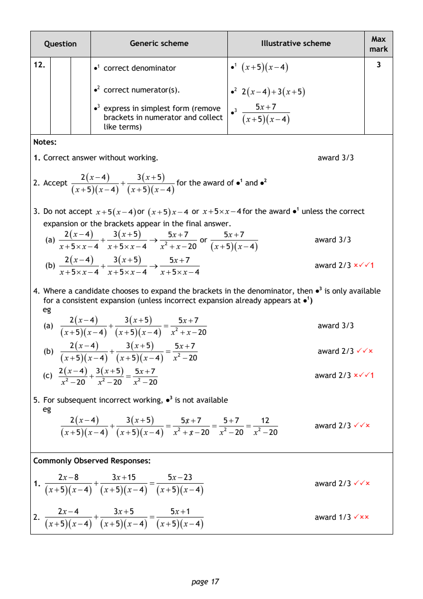
Selectable page text
Max
Question Generic scheme Illustrative scheme
mark
12. •1 correct denominator •1 (x+5)(x−4) 3
•2 correct numerator(s). •2 2(x−4)+3(x+5)
•3 express in simplest form (remove 5x+7
•
brackets in numerator and collect ³ (x+5)(x−4)
like terms)
Notes:
1. Correct answer without working. award 3/3
2(x−4) 3(x+5)
2. Accept + for the award of •¹ and •²
(x+5)(x−4) (x+5)(x−4)
3. Do not accept x+5(x−4)or (x+5)x−4 or x+5×x−4for the award •¹ unless the correct
expansion or the brackets appear in the final answer.
2(x−4) 3(x+5)
5x+7 5x+7
(a) + → or award 3/3
x+5×x−4 x+5×x−4 x² +x−20 (x+5)(x−4)
2(x−4) 3(x+5)
5x+7
(b) + → award 2/3 1
x+5×x−4 x+5×x−4 x+5×x−4
4. Where a candidate chooses to expand the brackets in the denominator, then •³ is only available
for a consistent expansion (unless incorrect expansion already appears at •¹)
eg
2(x−4) 3(x+5)
5x+7
(a) + = award 3/3
(x+5)(x−4) (x+5)(x−4) x² +x−20
2(x−4) 3(x+5)
5x+7
(b) + = award 2/3
(x+5)(x−4) (x+5)(x−4) x² −20
2(x−4) 3(x+5) 5x+7
(c) + = award 2/3 1
x² −20 x² −20 x² −20
5. For subsequent incorrect working, •³ is not available
eg
2(x−4) 3(x+5)
5x/ +7 5+7 12
+ = = = award 2/3
(x+5)(x−4) (x+5)(x−4) x² +x/ −20 x² −20 x² −20
Commonly Observed Responses:
2x−8 3x+15 5x−23
1. + = award 2/3
(x+5)(x−4) (x+5)(x−4) (x+5)(x−4)
2x−4 3x+5 5x+1
2. + = award 1/3
(x+5)(x−4) (x+5)(x−4) (x+5)(x−4)
page 17PDF page 18
Paper 2, Question 13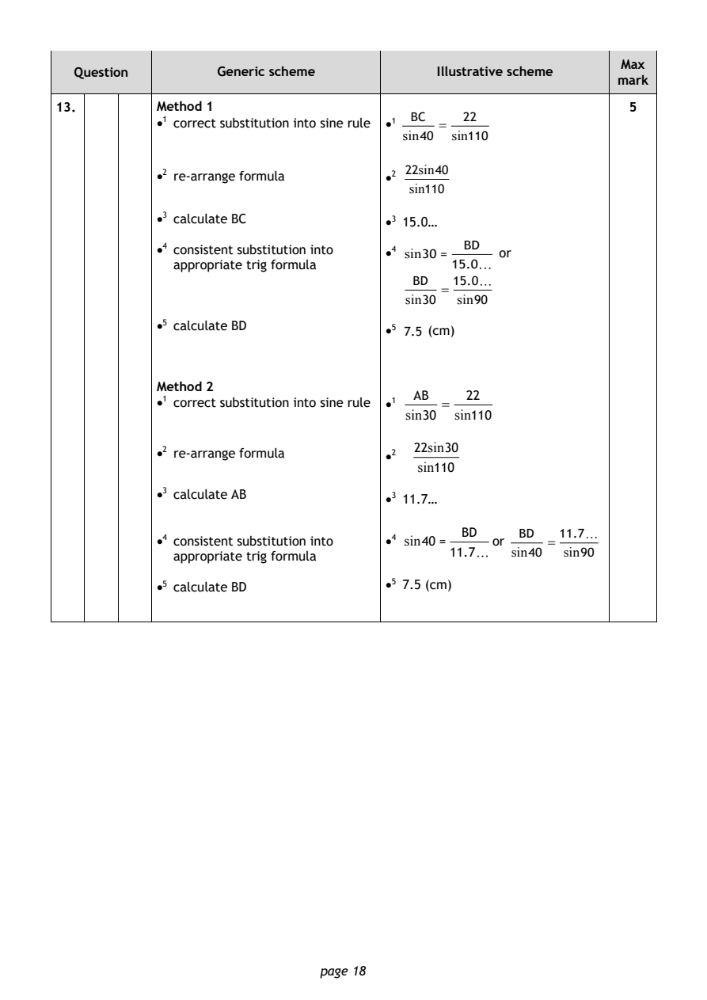
Selectable page text
Max
Question Generic scheme Illustrative scheme
mark
13. Method 1 5
BC 22
•1 correct substitution into sine rule •1 =
sin40 sin110
22sin40
•2 re-arrange formula •2
sin110
•3 calculate BC •3 15.0…
•4 consistent substitution into •4 sin30 = BD or
appropriate trig formula 15.0
BD 15.0
=
sin30 sin90
•5 calculate BD •5 7.5 (cm)
Method 2
AB 22
•1 correct substitution into sine rule •1 =
sin30 sin110
22sin30
•2 re-arrange formula •2
sin110
•3 calculate AB •3 11.7…
BD BD 11.7
•4 consistent substitution into •4 sin40 = or =
appropriate trig formula
11.7 sin40 sin90
•5 calculate BD •5 7.5 (cm)
page 18PDF page 19
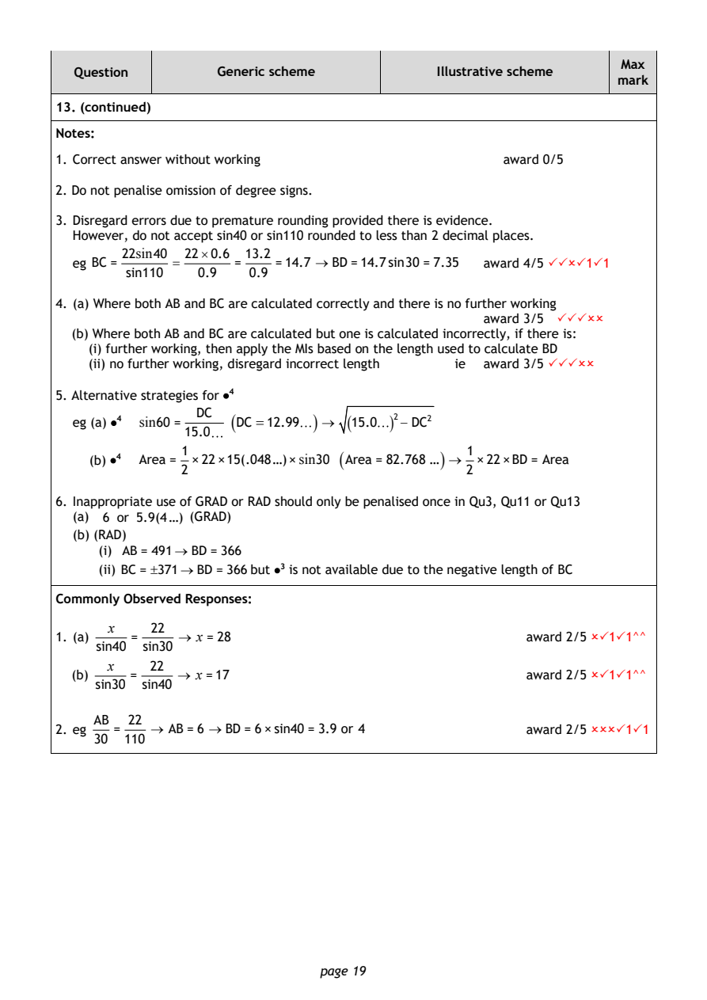
Selectable page text
Max
Question Generic scheme Illustrative scheme
mark
13. (continued)
Notes:
1. Correct answer without working award 0/5
2. Do not penalise omission of degree signs.
3. Disregard errors due to premature rounding provided there is evidence.
However, do not accept sin40 or sin110 rounded to less than 2 decimal places.
22sin40 22×0.6 13.2
eg BC= = = =14.7 →BD=14.7sin30 =7.35 award 4/5 11
sin110 0.9 0.9
4. (a) Where both AB and BC are calculated correctly and there is no further working
award 3/5
(b) Where both AB and BC are calculated but one is calculated incorrectly, if there is:
(i) further working, then apply the MIs based on the length used to calculate BD
(ii) no further working, disregard incorrect length ie award 3/5
5. Alternative strategies for •⁴
DC
eg (a) •⁴ sin60 = ( DC =12.99 ) → (15.0 )²− DC²
15.0
1 1
(b) •⁴ Area = ×22×15(.048…)×sin30 ( Area =82.768 … ) → ×22×BD= Area
2 2
6. Inappropriate use of GRAD or RAD should only be penalised once in Qu3, Qu11 or Qu13
(a) 6 or 5.9(4…) (GRAD)
(b) (RAD)
(i) AB= 491→BD=366
(ii) BC= ±371→BD=366but •³ is not available due to the negative length of BC
Commonly Observed Responses:
x 22
1. (a) = → x = 28 award 2/5 11^^
sin40 sin30
x 22
(b) = → x =17 award 2/5 11^^
sin30 sin40
AB 22
2. eg = → AB=6 →BD=6×sin40 =3.9 or 4 award 2/5 11
30 110
page 19PDF page 20
Paper 2, Question 14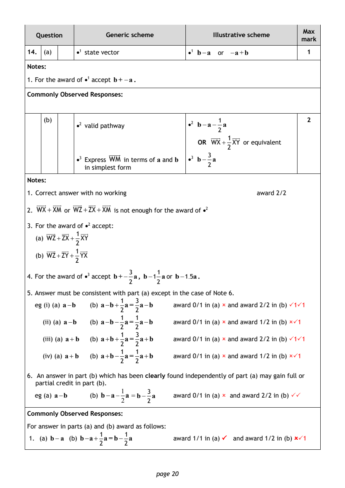
Selectable page text
Max
Question Generic scheme Illustrative scheme
mark
14. (a) •1 state vector •1 b−a or −a+b 1
Notes:
1. For the award of •¹ accept b+ −a.
Commonly Observed Responses:
(b) 1 2
•2 valid pathway •2 b−a− a
2
1
OR WX+ XY or equivalent
2
3
•3 Express WM in terms of a and b •3 b− a
2
in simplest form
Notes:
1. Correct answer with no working award 2/2
2. WX+XM or WZ+ZX+XM is not enough for the award of •²
3. For the award of •² accept:
1
(a) WZ+ZX+ XY
2
1
(b) WZ+ZY+ YX
2
3 1
4. For the award of •³ accept b+− a, b−1 aor b−1.5a.
2 2
5. Answer must be consistent with part (a) except in the case of Note 6.
1 3
eg (i) (a) a−b (b) a−b+ a= a−b award 0/1 in (a) and award 2/2 in (b) 11
2 2
1 1
(ii) (a) a−b (b) a−b− a= a−b award 0/1 in (a) and award 1/2 in (b) 1
2 2
1 3
(iii) (a) a+b (b) a+b+ a= a+b award 0/1 in (a) and award 2/2 in (b) 11
2 2
1 1
(iv) (a) a+b (b) a+b− a= a+b award 0/1 in (a) and award 1/2 in (b) 1
2 2
6. An answer in part (b) which has been clearly found independently of part (a) may gain full or
partial credit in part (b).
1 3
eg (a) a−b (b) b−a− a =b− a award 0/1 in (a) and award 2/2 in (b)
2 2
Commonly Observed Responses:
For answer in parts (a) and (b) award as follows:
1 1
1. (a) b−a (b) b−a+ a=b− a award 1/1 in (a) and award 1/2 in (b) 1
2 2
page 20PDF page 21
Paper 2, Question 15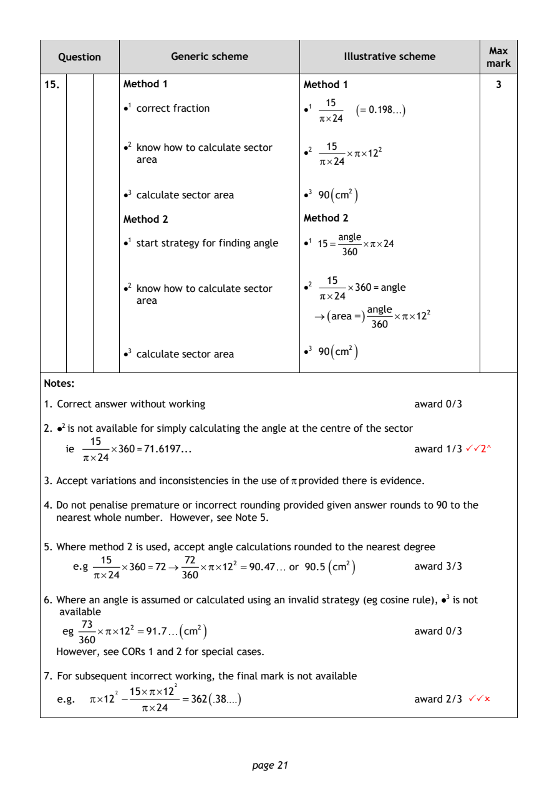
Selectable page text
Max
Question Generic scheme Illustrative scheme
mark
15. Method 1 Method 1 3
15
•1 correct fraction •1 (= 0.198 )
π×24
•2 know how to calculate sector 15
•2 ×π×12²
area π×24
•3 calculate sector area •3 90 ( cm² )
Method 2 Method 2
angle
•1 start strategy for finding angle •1 15= ×π×24
360
15
•2 know how to calculate sector •2 ×360 = angle
π×24
area
angle
→(area=) ×π×12²
360
( )
•3 calculate sector area •3 90 cm²
Notes:
1. Correct answer without working award 0/3
2. •² is not available for simply calculating the angle at the centre of the sector
15
ie ×360 = 71.6197... award 1/3 2^
π×24
3. Accept variations and inconsistencies in the use ofπprovided there is evidence.
4. Do not penalise premature or incorrect rounding provided given answer rounds to 90 to the
nearest whole number. However, see Note 5.
5. Where method 2 is used, accept angle calculations rounded to the nearest degree
15 72 ( )
e.g ×360 = 72 → ×π×12² =90.47 or 90.5 cm² award 3/3
π×24 360
6. Where an angle is assumed or calculated using an invalid strategy (eg cosine rule), •³ is not
available
73 ( )
eg ×π×12² =91.7 cm² award 0/3
360
However, see CORs 1 and 2 for special cases.
7. For subsequent incorrect working, the final mark is not available
15×π×12²
e.g. π×12² − =362(.38....) award 2/3
π×24
page 21PDF page 22
Paper 2, Question 16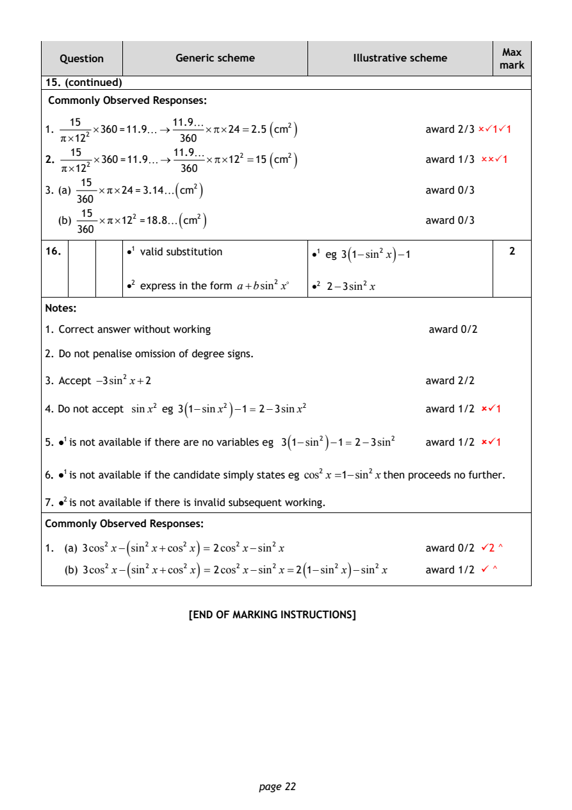
Selectable page text
Max
Question Generic scheme Illustrative scheme
mark
15. (continued)
Commonly Observed Responses:
15 11.9 ( )
1. ×360 = 11.9 → ×π×24=2.5 cm² award 2/3 11
π×12² 360
15 11.9 ( )
2. ×360 = 11.9 → ×π×12² =15 cm² award 1/3 1
π×12² 360
15 ( )
3. (a) ×π×24 = 3.14 cm² award 0/3
360
15 ( )
(b) ×π×12² = 18.8 cm² award 0/3
360
16. •1 valid substitution •1 eg 3 ( 1−sin² x ) −1 2
•2 express in the form a +bsin² x •2 2−3sin² x
Notes:
1. Correct answer without working award 0/2
2. Do not penalise omission of degree signs.
3. Accept −3sin² x+2 award 2/2
( )
4. Do not accept sinx² eg 3 1−sinx² −1= 2−3sinx² award 1/2 ✓1
( )
5. •¹ is not available if there are no variables eg 3 1−sin² −1= 2−3sin² award 1/2 ✓1
6. •¹ is not available if the candidate simply states eg cos² x =1−sin² xthen proceeds no further.
7. •² is not available if there is invalid subsequent working.
Commonly Observed Responses:
( )
1. (a) 3cos² x− sin² x+cos² x = 2cos² x−sin² x award 0/2 ✓2 ^
( ) ( )
(b) 3cos² x− sin² x+cos² x = 2cos² x−sin² x=2 1−sin² x −sin² x award 1/2 ✓ ^
[END OF MARKING INSTRUCTIONS]
page 22